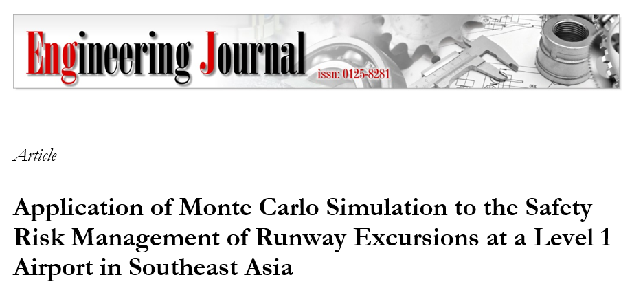
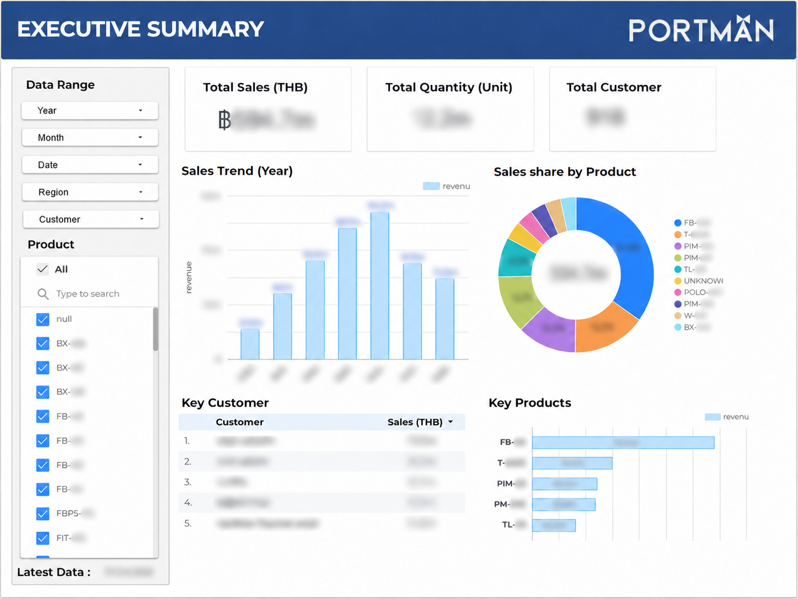
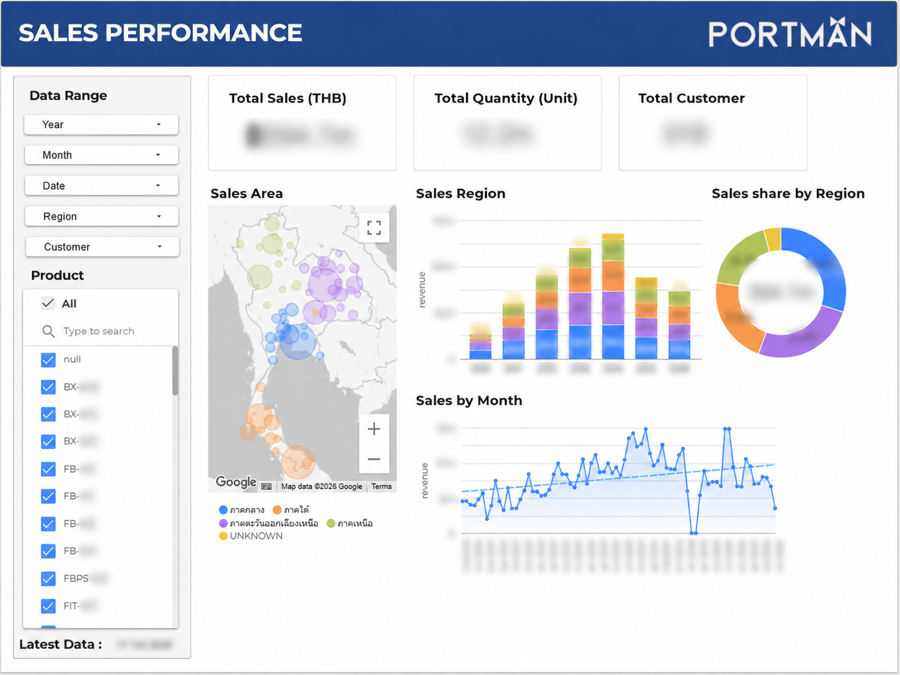
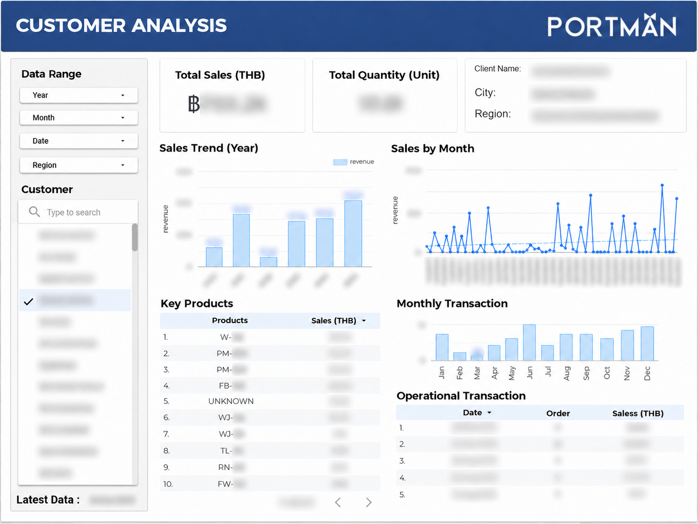
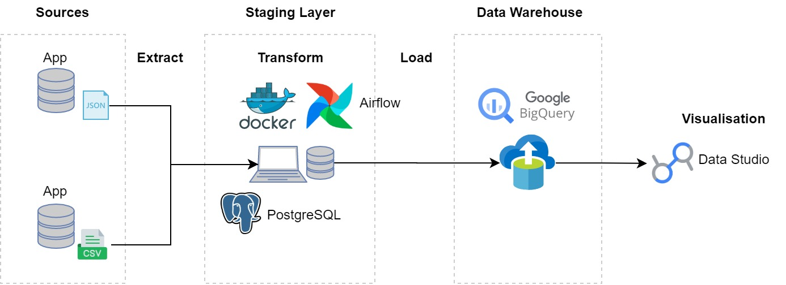
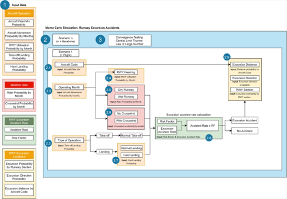
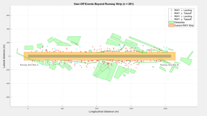
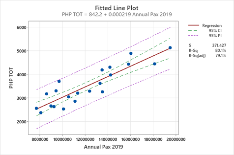
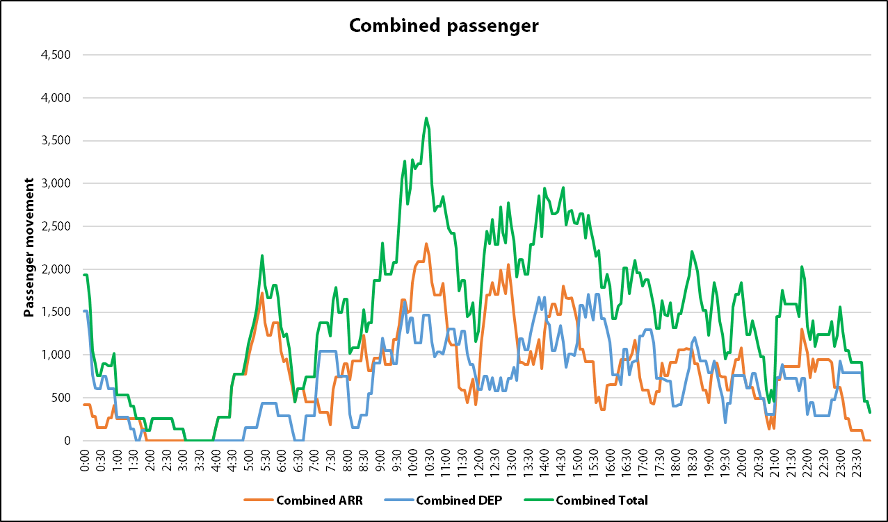

2022 — 2025
Master of Science in Engineering Business Management
Warwick Manufacturing Group, University of Warwick
Coventry, United Kingdom
Part-time study
View WMG Overseas Prize certificate

Senior Consultant / Data Analyst / Data Engineer
BANGKOK, THAILAND
Bangkok, Thailand
Coventry, United Kingdom
Warwick Manufacturing Group, University of Warwick
Coventry, United Kingdom
Part-time study
Chula System Engineering, Chulalongkorn University
Bangkok, Thailand
Part-time study
International School of Engineering, Chulalongkorn University
Bangkok, Thailand
Bangkok, Thailand


RESEARCH & PUBLICATIONS
Developed a data-driven quantitative risk assessment framework using Monte Carlo simulation to evaluate runway excursion risks, including aircraft veer-off and overrun scenarios. Applied mathematical modeling, probability distributions, and statistical analysis to process operational and infrastructure data, estimate accident likelihood, and quantify safety risks. Simulated various risk mitigation scenarios by adjusting model parameters and evaluating their effectiveness.
Read the published paper
2024 — Present
2024 — Present
2021 — 2023
2020 — 2021
Senior Consultant Team lead
To70 Aviation Consultants (Thailand) Co., Ltd.
Developed Python-based computational models to generate and analyze three-dimensional airport obstacle protection surfaces, supporting obstacle clearance assessments, aviation safety evaluations, and airport development planning.
Tools and technologies Python · Google Earth


Data Engineer / Data Analyst
Portman Sports Company Limited
Designed and developed a data engineering pipeline to integrate factory operational data into a centralized data warehouse, automate data processing workflows, and enable data-driven decision-making through business intelligence dashboards.
Tools and technologies PostgreSQL · Apache Airflow · Docker · Google BigQuery · Google Data Studio · SQL · Python




Senior Consultant Team lead
To70 Aviation Consultants (Thailand) Co., Ltd.
Conducted quantitative aviation safety risk assessments using Monte Carlo simulations to evaluate aircraft accident probabilities and potential consequences, supporting airport safety planning and risk mitigation strategies.
Tools and technologies MATLAB · Python


Consultant Team lead
To70 Aviation Consultants (Thailand) Co., Ltd.
Conducted aviation market analysis and passenger demand forecasting for over 30 airports across Thailand to support airport master planning, infrastructure development, and long-term capacity planning.
Tools and technologies Microsoft Excel · Minitab · Power BI

Consultant Team member
To70 Aviation Consultants (Thailand) Co., Ltd.
Conducted air cargo demand analysis and forecasting to support airport cargo infrastructure development, warehouse capacity planning, and operational efficiency.
Tools and technologies Microsoft Excel · PostgreSQL
Consultant
To70 Aviation Consultants (Thailand) Co., Ltd.
Conducted peak-hour traffic analysis to assess passenger and aircraft movement patterns, supporting airport capacity assessment, infrastructure planning, and operational requirements.
Tools and technologies Microsoft Excel


Junior Consultant
To70 Aviation Consultants (Thailand) Co., Ltd.
Supported the implementation of a Safety Oversight Management System for an organization, including requirements gathering, data migration, system configuration, and ongoing administration to support operational needs.
Tools and technologies To be added